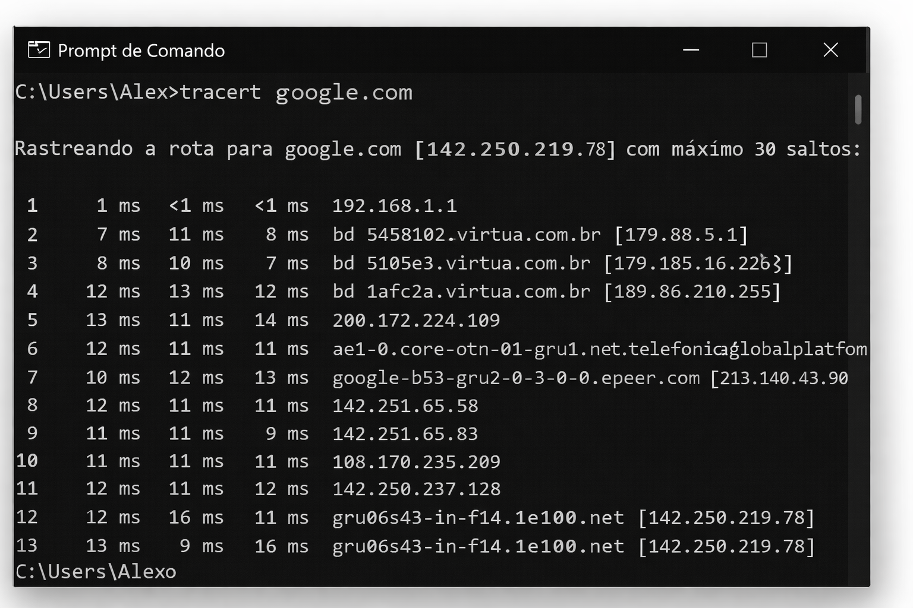

Configurar / Verificar IP
Abra o Prompt de Comando e digite:
ipconfig
Esse comando mostra:
- Endereço IP
- Máscara de sub-rede
- Gateway padrão

Testar Conexão
Para testar se a internet está funcionando digite:
ping 8.8.8.8
Se aparecer resposta significa que a conexão está funcionando.

Ver rota da conexão
Digite o comando:
tracert google.com
Esse comando mostra por quais servidores sua conexão passa até chegar ao destino.

Formatar um computador
- Criar pendrive bootável
- Entrar na BIOS
- Selecionar boot pelo USB
- Instalar o sistema operacional
Instalar Linux
Exemplo usando Ubuntu:
- Baixar a ISO do Ubuntu
- Criar pendrive bootável
- Iniciar o computador pelo USB
- Seguir os passos da instalação